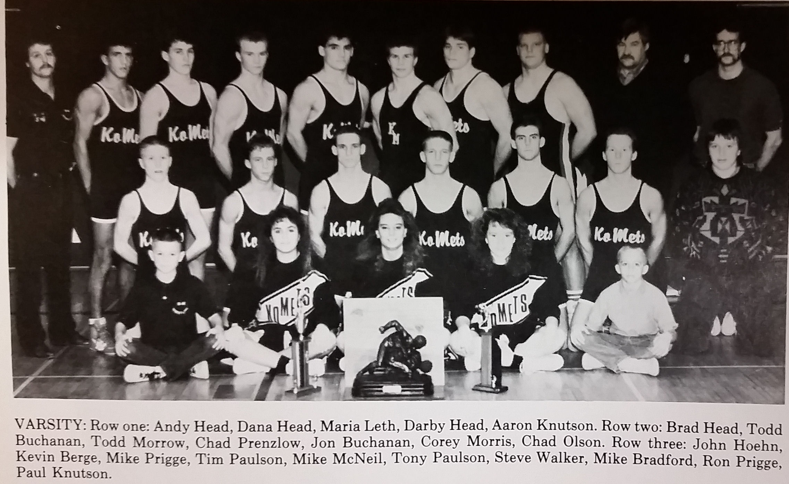

Season
1988-89
11-2Dual record
26Wrestlers
Ron PriggeHead coach

Roster
| Wt | Wrestler | Grade | Record | State |
|---|---|---|---|---|
| Nov. | 28th Pine Island | W | 54-15 | |
| Dec. | 6th Lake City | W | 48-17 | |
| Dec. | 16th Austin Pacelli | W | 57-7 | |
| Dec. | 20th Cannon Falls | W | 47-12 | |
| Dec. | 6th Hayfield-Dodge Center | W | 55-10 | |
| Jan. | 10th Plainview | L | 27-25 | |
| Jan. | 13th Stewartville | W | 34-18 | |
| Jan. | 17th Rochester Lourdes | W | 70-2 | |
| Jan. | 24th St. Charles | W | 57-16 | |
| Jan. | 26th Blooming Prairie | W | 44-14 | |
| Jan. | 31st Harmony-Prestion-Fountain | W | 52-6 | |
| Feb. | 3rd Byron | W | 31-20 | |
| Feb. | 14th LaCrescent | L | 28-27 | |
| 103# | Brad Head | 10th | 19-8 | |
| 112# | Todd Buchanan | 10th | 19-11 | |
| 119# | Todd Morrow | 12th | 31-4 | |
| 125# | Chad Prenzlow | 10th | 15-8 | |
| 130# | Jon Buchanan | 12th | 22-7 | |
| 135# | Corey Morris | 11th | 19-6 | |
| 140# | Kevin Berge | 10th | 24-4 | |
| 145# | Mike Prigge | 12th | 18-8 | |
| 152# | Tim Paulson | 12th | 18-6 | |
| 160# | Mike McNeil | 12th | 24-4 | |
| 171# | Tony Paulson | 10th | 19-9 | |
| 189# | Steve Walker | 12th | 24-5 | |
| 285# | Shane Skime | 11th | 2-6 |
Team Results
11-2 · Click to expand
- Nov. 28thPine IslandW54-15
- Dec. 6thLake CityW48-17
- Dec. 16thAustin PacelliW57-7
- Dec. 20thCannon FallsW47-12
- Dec. 6thHayfield-Dodge CenterW55-10
- Jan. 10thPlainviewL27-25
- Jan. 13thStewartvilleW34-18
- Jan. 17thRochester LourdesW70-2
- Jan. 24thSt. CharlesW57-16
- Jan. 26thBlooming PrairieW44-14
- Jan. 31stHarmony-Prestion-FountainW52-6
- Feb. 3rdByronW31-20
- Feb. 14thLaCrescentL28-27
Head coachRon Prigge